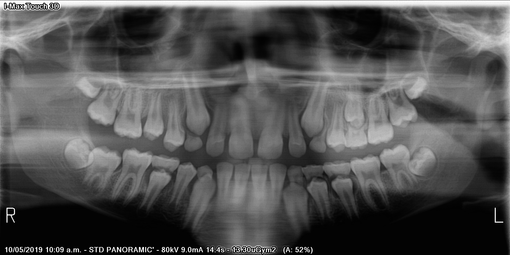
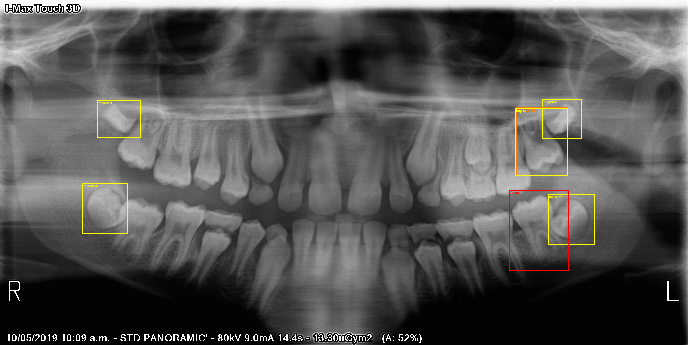

MY PORTFOLIO
Dental X-ray Disease Detection
Developed an intelligent system for the automatic analysis of dental X-rays. This project features a local web application where users can upload raw dental X-ray images. Once uploaded, a trained YOLO-based computer vision model processes the image to identify and graphically highlight diseased or unhealthy teeth. This acts as a powerful diagnostic assistant for dental professionals.

Original Upload

AI Detection Result
Personal RAG Assistant for TikTok
A smart Telegram bot powered by Retrieval-Augmented Generation (RAG) created specifically to assist a TikTok content creator. The bot acts as a personal manager: it can answer account-specific questions, brainstorm new ideas, and help plan weekly content schedules based on the author's history stored securely in a local SQLite database.
See more info about the Chat Bot →